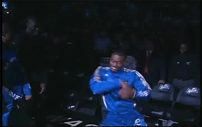

The Dougie (/ˈdʌɡi/ DUG-ee) is an African-American hip hop dance generally performed by moving one's body in a shimmy style and passing a hand through or near the hair on one's own head.[1]
The dance originated in Dallas, Texas,[2][3] where it took its name from similar moves performed by 1980s rapperDoug E. Fresh.[1][4][5] The Dougie gained notoriety through rapper Lil' Wil, whose song "My Dougie", released in late 2007, became a local hit. Then, a person called C-Smoove in Southern California[4] taught the future members of Cali Swag District how to do the dance.[4][6] Cali Swag District recorded the song "Teach Me How to Dougie" and filmed the music video in Inglewood, California, during the summer of 2009.[4][5] Subsequently, the video along with the dance became popular on YouTube.[4]
Montae Ray Talbert, known as "M-Bone" of Cali Swag District, was killed in his car by an unidentified gunman.[5] According to the Cali Swag District spokesman, Greg Miller, "He was the best at doing the dance, and on tour he was always the one in the forefront … He helped bring it to the masses."[5] At the funeral, mourners did the dance for a tribute video, and Talbert's grandmother did it as part of her eulogy.[5]
In late 2010 and throughout 2011, the Dougie was performed by a number of athletes and celebrities, including Chris Brown, Henri Lansbury, Reggie Bush,[4] Dez Bryant,[4] DeMarcus Cousins and Hassan Whiteside,[4] Glen "Big Baby" Davis,[1] Nate Robinson,[4] John Wall,[1][7] Braylon Edwards, Gaël Monfils[1][8] Wolf Blitzer,[5][9] Kate Upton,[10][11][12] and Michelle Obama.[13] In 2012, gymnast Gabby Douglas performed the Dougie upon winning the U.S. Olympic trials[14] and 2012 Summer Olympics U.S. gymnastics team gold and vault silver-medalist McKayla Maroney taught Jenna Hager, daughter of former President of the United States George W. Bush, how to do the Dougie while the gymnastics team was touring London on top of a doubledecker bus.[15] Even rugby union players have been seen doing their own version of the Dougie with Juan de Jongh, Julian Savea, Lelia Masaga and other notable players, whose athletic deeds can be watched on YouTube.
In modern pop-culture (2024) the Dougie is often used for satire purposes.